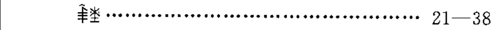
根与花 · 四川民族出版社 1999
original_id: book_00002_gen_yu_hua__gen_yu_hua_p006_novel_plain_yi__v4_box_006__part_002
ꑋꃨ……21—38
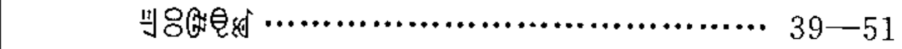
根与花 · 四川民族出版社 1999
original_id: book_00003_gen_yu_hua__gen_yu_hua_p006_novel_plain_yi__v4_box_006__part_003
ꉊꈯꎟꋠꏝ……39—51
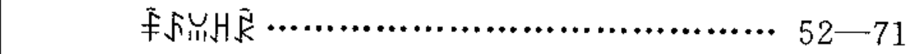
根与花 · 四川民族出版社 1999
original_id: book_00004_gen_yu_hua__gen_yu_hua_p006_novel_plain_yi__v4_box_006__part_004
ꅩꌺꈍꃅꂯ……52—71
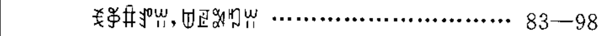
根与花 · 四川民族出版社 1999
original_id: book_00006_gen_yu_hua__gen_yu_hua_p006_novel_plain_yi__v4_box_006__part_006
ꉂꃆꐙꍚꀕ，ꌂꏣꎵꑳꀕ……83—98
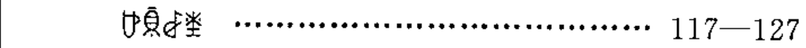
根与花 · 四川民族出版社 1999
original_id: book_00008_gen_yu_hua__gen_yu_hua_p006_novel_plain_yi__v4_box_006__part_008
ꐴꌊꆀꃨ……117—127
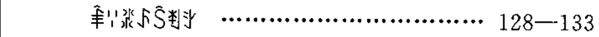
根与花 · 四川民族出版社 1999
original_id: book_00009_gen_yu_hua__gen_yu_hua_p006_novel_plain_yi__v4_box_006__part_009
ꑋꈌꁬꌺꇘꄮꇬ……128—133
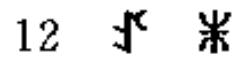
根与花 · 四川民族出版社 1999
original_id: book_00016_gen_yu_hua__gen_yu_hua_p018_novel_plain_yi__v3_box_001__header_text_line
12ꀋꍝ
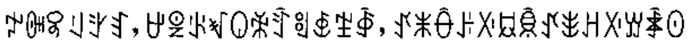
根与花 · 四川民族出版社 1999
original_id: book_00017_gen_yu_hua__gen_yu_hua_p018_novel_plain_yi__v4_box_002__part_001
ꉢꁏꎽꆹꇬꆏ，ꉠꑓꂪꃴꐎꆗꄷꑠꇅꄹꇈ，ꀋꂓꂶꌠꋌꇷꌊꀋꎺꃅꋌꑣꄑꏿ
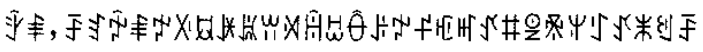
根与花 · 四川民族出版社 1999
original_id: book_00018_gen_yu_hua__gen_yu_hua_p018_novel_plain_yi__v4_box_002__part_002
ꇫꑌ，ꄚꆏꉡꑌꉢꋌꇷꐂꑐꀕꄉꀌꀠꂶꌠꉢꄝꇿꎭꀋꐚꑓꍰꅍꇰꀋꂓꐏꄚ
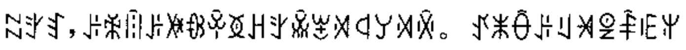
根与花 · 四川民族出版社 1999
original_id: book_00019_gen_yu_hua__gen_yu_hua_p018_novel_plain_yi__v4_box_002__part_003
ꉆꇬꆏ，ꌠꆗꈧꌠꐃꁆꏩꅉꃅꇬꊎꂃꄉꒉꌦꄉꏽ。ꀋꂓꂶꌠꆹꈁꑓꅩꍠꅍ
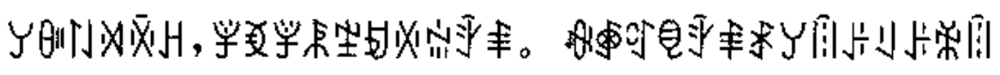
根与花 · 四川民族出版社 1999
original_id: book_00020_gen_yu_hua__gen_yu_hua_p018_novel_plain_yi__v4_box_002__part_004
ꌦꀽꇁꄉꏽꃅ，ꇇꃶꇇꂿꄹꀂꏾꅑꇫꑌ。ꊿꑸꑽꋠꇫꑌꑴꌦꈧꌠꆹꌠꆗꈧ
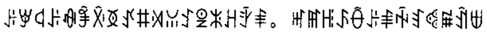
根与花 · 四川民族出版社 1999
original_id: book_00021_gen_yu_hua__gen_yu_hua_p018_novel_plain_yi__v4_box_002__part_005
ꌠꑡꒉꌠꊿꊇꋋꅉꀋꐚꄉꈍꉘꑓꍝꃅꇫꑌ。ꎭꂵꆿꌺꂶꌠꑌꑬꆏꈾꏜꀉꁁ
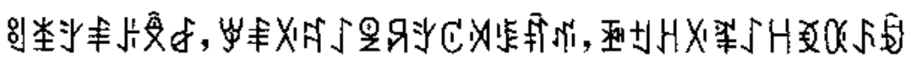
根与花 · 四川民族出版社 1999
original_id: book_00022_gen_yu_hua__gen_yu_hua_p018_novel_plain_yi__v4_box_002__part_006
ꑠꁧꇬꑌꌠꉥꆀ，ꑡꑌꋌꉜꋍꑓꋪꇬꊐꄉꌐꐤꁮ，ꋘꉬꃅꋌꍻꋍꀿꃶꄰꌺꀁ
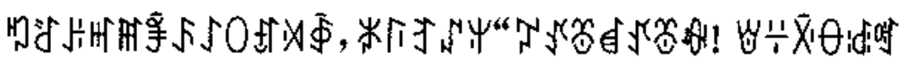
根与花 · 四川民族出版社 1999
original_id: book_00023_gen_yu_hua__gen_yu_hua_p018_novel_plain_yi__v4_box_002__part_007
ꑳꋒꌠꎭꂵꊇꌺꋍꄲꀵꄉꇈ，ꑊꑍꆈꁴꅍ“ꇗꀋꁨꀸꀋꁨꊿ！ꇐꇭꋋꂷꅽꈩ
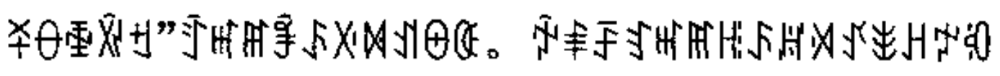
根与花 · 四川民族出版社 1999
original_id: book_00024_gen_yu_hua__gen_yu_hua_p018_novel_plain_yi__v4_box_002__part_008
ꋏꂷꅀꑞꉬ”ꄷꎭꂵꊇꌺꋌꁒꀊꑙꈿ。ꉡꑌꄚꆏꎭꂵꆿꌺꏦꄉꀋꎺꃅꉢꂇ
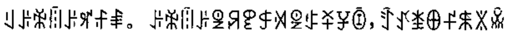
根与花 · 四川民族出版社 1999
original_id: book_00025_gen_yu_hua__gen_yu_hua_p018_novel_plain_yi__v4_box_002__part_009
ꆹꌠꆗꈧꌠꈪꄙꑌ。ꌠꆗꈧꌠꑓꋪꀏꐱꄉꑓꃈꋏꐯꀦ，ꄷꀋꁧꆺꄝꐬꇓꊎ
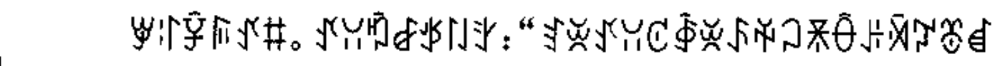
根与花 · 四川民族出版社 1999
original_id: book_00026_gen_yu_hua__gen_yu_hua_p018_novel_plain_yi__v4_box_002__part_010
ꑡꌌꐮꌕꀋꐚ。ꀋꃋꑲꆀꉪꇁꇬ：“ꆏꌞꀋꃋꊐꇈꌞꌺꑮꃀꍯꂶꌠꄈꇗꁨꀸ
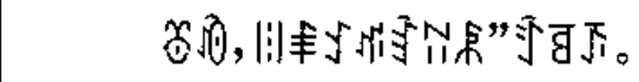
根与花 · 四川民族出版社 1999
original_id: book_00027_gen_yu_hua__gen_yu_hua_p018_novel_plain_yi__v4_box_002__part_011
ꁨꀐ，ꈨꑌꉘꁮꆎꊃꂿ”ꄷꉉꋭ。
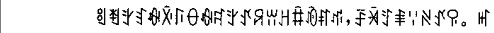
根与花 · 四川民族出版社 1999
original_id: book_00028_gen_yu_hua__gen_yu_hua_p018_novel_plain_yi__v4_box_002__part_012
ꑠꄮꇬꆏꊿꋋꑍꂷꊿꉜꇬꀋꋪꀕꃅꐙꀐꐥꁮ，ꄚꈀꄸꑌꈌꋊꀋꀬ。ꎭ
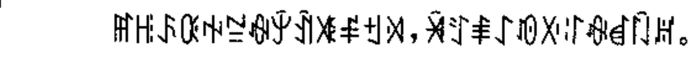
根与花 · 四川民族出版社 1999
original_id: book_00029_gen_yu_hua__gen_yu_hua_p018_novel_plain_yi__v4_box_002__part_013
ꂵꆿꌺꄰꑭꊂꊿꐲꀉꇨꑷꉬꄉ，ꈀꄸꑌꋍꀑꋌꌌꊿꀸꇀꏦ。
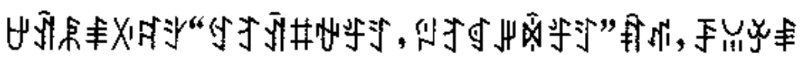
根与花 · 四川民族出版社 1999
original_id: book_00030_gen_yu_hua__gen_yu_hua_p018_novel_plain_yi__v4_box_002__part_014
ꉠꀉꂿꑌꋌꉜꇬ“ꉐꆈꀉꐚꃮꄟꄸ，ꇌꆈꁍꎼꉇꄟꄸ”ꐤꁮ，ꄚꈍꏯꑌ
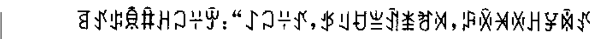
根与花 · 四川民族出版社 1999
original_id: book_00031_gen_yu_hua__gen_yu_hua_p018_novel_plain_yi__v4_box_002__part_015
ꉉꀋꌒꌊꐙꃅꃀꇭꏭ：“ꋍꃀꇭꀋ，ꉪꆹꀀꁈꀉꁧꐛꄉ，ꈂꏽꈁꏾꃅꐯꉇꀋ
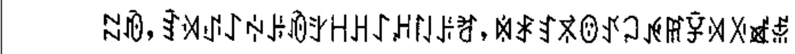
根与花 · 四川民族出版社 1999
original_id: book_00032_gen_yu_hua__gen_yu_hua_p018_novel_plain_yi__v4_box_002__part_016
ꉆꀐ，ꆎꄉꂴꋍꏢꌠꀐꇬꀿꃅꋍꃅꇁꌠꐛ，ꉈꑴꆏꃷꇎꀋꃀꉌꂵꐮꄉꋌꑵꅇ
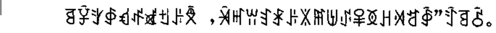
根与花 · 四川民族出版社 1999
original_id: book_00033_gen_yu_hua__gen_yu_hua_p018_novel_plain_yi__v4_box_002__part_017
ꉉꐮꇬꇉꃹꅲꑵꉬꌠꉥ，ꈀꎭꀕꆏꑴꌠꇓꂵꉅꂴꅥꅉꃅꄉꅊꇈ”ꄷꉉꋺ。
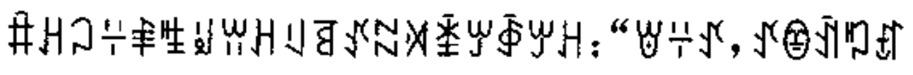
根与花 · 四川民族出版社 1999
original_id: book_00034_gen_yu_hua__gen_yu_hua_p018_novel_plain_yi__v4_box_002__part_018
ꐙꃅꃀꇭꑌꊒꆽꀕꃅꆹꉉꀋꉆꄉꁦꏮꇈꏮꃅ：“ꇐꇭꀋ，ꀋꂮꀉꑳꀵ
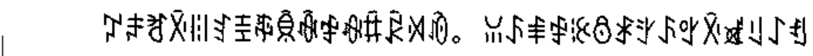
根与花 · 四川民族出版社 1999
original_id: book_00035_gen_yu_hua__gen_yu_hua_p018_novel_plain_yi__v4_box_002__part_019
ꇗꌧꐛꋋꈨꆏꀨꎹꌊꊾꒆꊿꐙꂯꄉꀐ。ꈍꌺꑌꒆꊭꉩꑴꇬꌺꃰꋋꑵꆹꋍꈓ
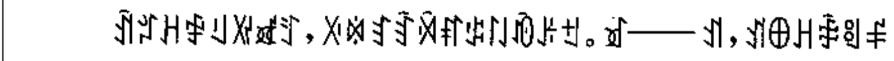
根与花 · 四川民族出版社 1999
original_id: book_00036_gen_yu_hua__gen_yu_hua_p018_novel_plain_yi__v4_box_002__part_020
ꀉꄂꃅꒆꆹꑟꑵꄸ，ꋌꉈꆏꆎꄈꐥꌒꇁꀐꌠꉬ。ꀃ——ꀊ，ꀊꆺꃅꑖꑠꑷ
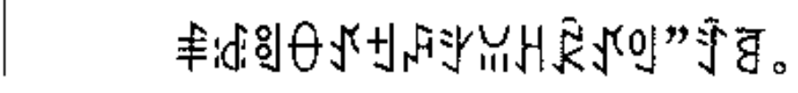
根与花 · 四川民族出版社 1999
original_id: book_00037_gen_yu_hua__gen_yu_hua_p018_novel_plain_yi__v4_box_002__part_021
ꑌꅽꑠꂷꀋꉬꇮꇬꈍꃅꂯꀋꆾ”ꄷꉉ。
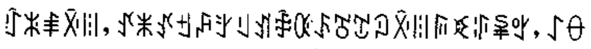
根与花 · 四川民族出版社 1999
original_id: book_00038_gen_yu_hua__gen_yu_hua_p018_novel_plain_yi__v4_box_002__part_022
ꇯꍝꑌꋋꈨ，ꀋꂓꀋꉬꇮꇬꆹꀊꑖꄰꌺꍸꇖꇜꋋꈨꌕꀥꃘꈜꃰ，ꋍꂷ
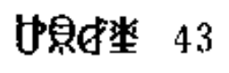
根与花 · 四川民族出版社 1999
original_id: book_00039_gen_yu_hua__gen_yu_hua_p049_novel_plain_yi__v3_box_001__header_text_line
ꐴꌋꆀꃨ 43
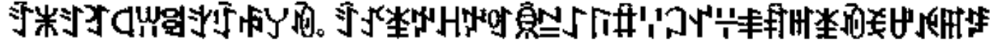
根与花 · 四川民族出版社 1999
original_id: book_00043_gen_yu_hua__gen_yu_hua_p049_novel_plain_yi__v4_box_002__part_004
ꄷꂓꄸꆈꒉꀕꑠꇬꇯꊌꌦꀐ。ꄷꀋꁧꉢꃅꉢꆾꌊꊂꋍꑍꐙꈌꃀꀈꇭꑌꐤꎭꁧꀐꉂꉠꉌꆅ
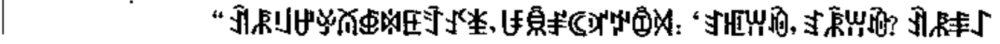
根与花 · 四川民族出版社 1999
original_id: book_00045_gen_yu_hua__gen_yu_hua_p049_novel_plain_yi__v4_box_003__part_002
“ꀉꂿꆹꉠꏯꊼꇅꉈꏹꄷꀋꁧ，ꀱꌊꂱꀯꃝꉢꀁꄉ：‘ꆏꇿꀕꀐ，ꆏꂾꀕꀐ？ꀉꂿꑌꋍ
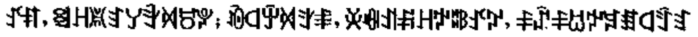
根与花 · 四川民族出版社 1999
original_id: book_00051_gen_yu_hua__gen_yu_hua_p049_novel_plain_yi__v4_box_003__part_009
ꀋꐥ，ꑠꃅꑎꆏꌦꄠꄉꀞꐕ；ꀐꒉꏭꄉꇬꑌ，ꌞꊿꀊꋩꀿꃮꄀꀋꇗ，ꅪꁳꅪꀠꉢꋇꏤꒉꄷꆏ
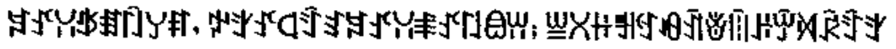
根与花 · 四川民族出版社 1999
original_id: book_00052_gen_yu_hua__gen_yu_hua_p049_novel_plain_yi__v4_box_003__part_010
ꋇꀋꃋꉪꏤꇀꌦꐥ，ꉢꇬꀋꒉꄷꆏꋇꀋꃋꑌꀋꇁꎂꀕ；ꁡꇤꃌꅿꉐꆂꀉꎴꈧꌠꏭꄉꂯꄷꆏ
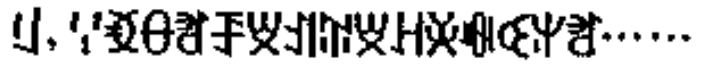
根与花 · 四川民族出版社 1999
original_id: book_00053_gen_yu_hua__gen_yu_hua_p049_novel_plain_yi__v4_box_003__part_011
ꆹ，ꈌꃶꂷꐛꄚꑝꀊꄶꑝꃅꌞꊿꒊꅍꐛ……
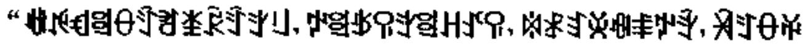
根与花 · 四川民族出版社 1999
original_id: book_00054_gen_yu_hua__gen_yu_hua_p049_novel_plain_yi__v4_box_003__part_012
“ꊉꉌꃹꑠꂷꄷꐛꁧꂯꄷꇬꆹ，ꉢꑠꉪꀬꇬꑠꃅꀋꀬ，ꉈꑴꆏꌞꊿꑌꉢꇫ，ꈀꄸꂷꑮ
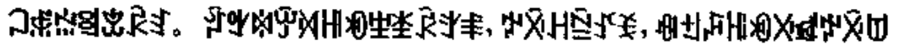
根与花 · 四川民族出版社 1999
original_id: book_00055_gen_yu_hua__gen_yu_hua_p049_novel_plain_yi__v4_box_003__part_013
ꃀꅇꅑꑠꒃꂯꆏ。ꄁꃰꉈꏭꄉꆿꏓꄻꃨꂯꇬꑌ，ꉢꋋꃅꊁꀋꉂ，ꊿꉬꇮꆿꏓꋌꑵꉢꋋꌂ
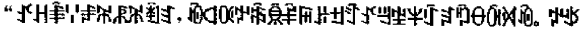
根与花 · 四川民族出版社 1999
original_id: book_00056_gen_yu_hua__gen_yu_hua_p049_novel_plain_yi__v4_box_005__part_001
“ꀋꃅꑋꈌꆫꄓꂿꄓꄭꆏ，ꀐꒉꄰꉢꎷꌊꑶꋦꌠꉬꄷꀋꉊꄹꈎꇯꆐꑲꂷꋈꄉꀐ。ꉢꃃ
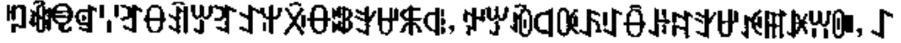
根与花 · 四川民族出版社 1999
original_id: book_00057_gen_yu_hua__gen_yu_hua_p049_novel_plain_yi__v4_box_005__part_002
ꑳꊾꋠꁍꈌꆈꂷꀉꏮꆈꉘꅍꋋꂷꄀꇬꉠꐬꆠ，ꉢꏮꀐꒉꄰꌺꇰꂶꌠꉜꇬꉠꉌꂵꐂꀕꁏ，ꋍ
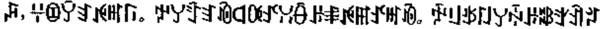
根与花 · 四川民族出版社 1999
original_id: book_00058_gen_yu_hua__gen_yu_hua_p049_novel_plain_yi__v4_box_005__part_004
ꇮ，ꇭꀧꌥꆏꉌꎭꑍ。ꉢꌦꄷꆏꀐꒉꄰꀋꃋꂶꌠꑌꉌꂵꀋꎭꀐ。ꉡꆹꉪꇁꌦꏡꌠꄀꇬꀉꄂ
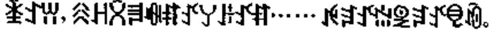
根与花 · 四川民族出版社 1999
original_id: book_00059_gen_yu_hua__gen_yu_hua_p049_novel_plain_yi__v4_box_005__part_005
ꁦꉘꀕ，ꋧꃅꇣꄧꊿꐥꀋꌦꌠꀋꐥ……ꉌꆐꀋꅑꑓꆐꀋꋠꀐ。
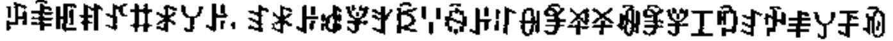
根与花 · 四川民族出版社 1999
original_id: book_00061_gen_yu_hua__gen_yu_hua_p049_novel_plain_yi__v4_box_005__part_007
ꈂꑋꇿꐥꀋꐚꑴꌦꌠ，ꆏꑴꌠꅽꇇꇬꌄꈌꍇꌠꌌꀽꊇꈭꋏꊾꊇꇇꀤꑲꆏꉡꑌꌦꄚꀐ
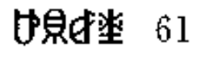
根与花 · 四川民族出版社 1999
original_id: book_00062_gen_yu_hua__gen_yu_hua_p067_novel_plain_yi__v3_box_001__header_text_line
ꐴꌋꆀꃨ 61
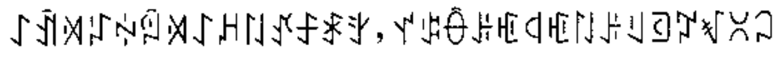
根与花 · 四川民族出版社 1999
original_id: book_00063_gen_yu_hua__gen_yu_hua_p067_novel_plain_yi__v3_box_002__body_line
ꋍꀉꄉꇱꏢꇋꄉꋍꈚꇁꀋꄐꑴꇬ，ꀈꌒꂶꌠꇿꒉꇿꇁꌠꆹꄡꇗꃴꇤꃀ
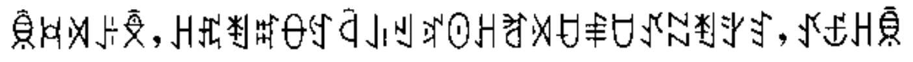
根与花 · 四川民族出版社 1999
original_id: book_00064_gen_yu_hua__gen_yu_hua_p067_novel_plain_yi__v3_box_003__body_line
ꌊꃬꄉꌠꉥ，ꃅꍵꄮꐰꂷꉐꒈꀮꄌꃝꏿꃅꐛꄉꀀꑌꇴꀋꉆꄮꇬꆏ，ꀋꇝꃅꌊ
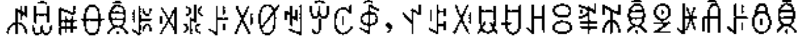
根与花 · 四川民族出版社 1999
original_id: book_00066_gen_yu_hua__gen_yu_hua_p067_novel_plain_yi__v4_box_004__part_002
ꉱꀟꏜꂷꌊꎀꄉꁬꌠꋌꀜꈐꏭꊐꇈ，ꀈꌒꋌꇷꀀꃅꈯꍻꄓꌊꑓꐂꋫꌠꉩꌊ
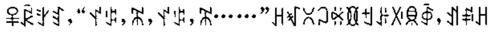
根与花 · 四川民族出版社 1999
original_id: book_00067_gen_yu_hua__gen_yu_hua_p067_novel_plain_yi__v3_box_005__body_line
ꅥꂯꇬꆏ，“ꀈꌒ，ꄓ，ꀈꌒ，ꄓ……”ꃅꃴꇤꃀꃛꁙꉬꌠꋌꌋꇈ，ꀊꅰꃅ
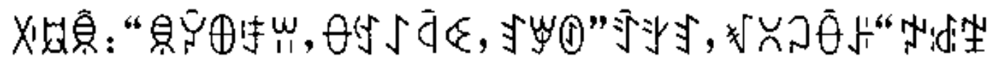
根与花 · 四川民族出版社 1999
original_id: book_00068_gen_yu_hua__gen_yu_hua_p067_novel_plain_yi__v3_box_006__body_line
ꋌꇷꌊ：“ꌋꐓꆺꄜꀕ，ꂷꉐꋍꒈꒊ，ꆏꑡꊸ”ꄷꇬꆏ，ꃴꇤꃀꂶꌠ“ꉢꅽꄹ
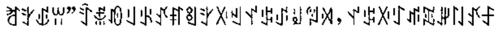
根与花 · 四川民族出版社 1999
original_id: book_00069_gen_yu_hua__gen_yu_hua_p067_novel_plain_yi__v3_box_007__body_line
ꐛꇬꍑꀕ”ꄷꅇꀑꆹꂪꀋꐥꑠꇬꋌꄌꀈꌒꂴꆽꅞꄉ，ꀈꌒꋌꇰꁮꐭꎼꇁꀋꄐ
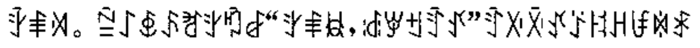
根与花 · 四川民族出版社 1999
original_id: book_00070_gen_yu_hua__gen_yu_hua_p067_novel_plain_yi__v3_box_008__body_line
ꇫꑌꄉ。ꊁꋍꇅꌺꐛꇬꑲꆀ“ꇬꑌꇆ，ꅽꑡꉬꄷꀋ”ꄷꋌꋋꀋꑇꐆꃅꀱꉈꑴ
屏幕页面样本 · 2026
original_id: screen_page_001
ꉢꅿꐥꐨꈝꃀꏢꌦꈐꏮ ꉌꃀꋍꂷꄉꅉꊌꊊꀋꐙꀑ ꑭꁗꀒꁧꉜꄉꄔꄸꑌ ꐰꇐꊂꈹꇁꄏꀕꀋꐚ ꉢꅿꉌꃀꂷꌦꑓꁴꊰꇁꌦꀑ ꉢꏣꉢꑟꉢꄝꆽꅞꈨꀑ ꃅꈎꃅꆪꀀꌳꃆꁧꇭꆹꄿꀕꀑ ꉢꀿꉢꃀꐥꅉꃀꅉꑟꇁꀑꃀꀋ ꉢꅿꐥꐨꈝꃀꏢꌦꈐꏮ ꉌꃀꋍꂷꄉꅉꊌꊊꀋꐙꀑ ꑭꁗꀒꁧꉜꄉꄔꄸꑌ ꐰꇐꊂꈹꇁꄏꀕꀋꐚ ꉢꅿꉌꃀꂷꌦꑓꁴꊰꇁꌦꀑ ꉢꏣꉢꑟꉢꄝꆽꅞꈨꀑ ꃅꈎꃅꆪꀀꌳꃆꁧꇭꆹꄿꀕꀑ ꉢꀿꉢꃀꐥꅉꃀꅉꑟꇁꀑꃀꀋ ꉘ…… ꉌꃀꄡꊰꂷꀋ ꑓꁴꄡꊰꂷꀋ ꑌꅐꑌꈌꁏꀑ ꑌꈌꁏꇁꂰꀑ ꐰꇐꑌꅉꑌꀋ ꈐꀑꉆꅉꉆꀋ ꃰꊿꋬꂻꇁꀑ ꋬꂻꇁꅉꈭ ꃰꊿꋬꂻꇁꀑ ꋬꂻꇁꅉꈭ
屏幕页面样本 · 2026
original_id: screen_page_002
ꃅꃴꈭꏂꁧꌦꇁꌦꃆꀑꃀꀋ ꅔꐎꏰꌺꁧꌦꇁꌦꃆꀑꃀꀋ ꇈꄩꇪꀮꁧꌦꇁꌦꃆꀑꃀꀋ ꆏꁧꇉꉈꉌꀱꇁꀕꑌꀋꐙ ꌋꐒꀀꂼꂻꌒꂻꀋꌒꀑꃀꀋ ꉢꅿꉌꃀꒉꌦꉩꌦꃆꀒꃀꀋ ꃅꈎꃅꆪꋍꈎꇈꀑꋍꈎꃆ ꆏꉂꇁꄮꑓꁴꑮꀕꇤꇁꌦꀑ ꁧ…… ꁧꀋꑳꉎꁧꐙꈨꑌꉘꑎꇖꇁꌦꀒ ꁧꉐꑘꀕꑌ ꁧ…… ꁧꀋꑳꐮꐦꐛꈨꑌꍵꈍꁏꇁꌦꀒ ꁧꉐꑘꀕꑌ ꌋꐒꀀꂼꂻꌒꂻꀋꌒꀑꃀꀋ ꉢꅿꉌꃀꒉꌦꉩꌦꃆꀑꃀꀋ ꃅꈎꃅꆪꋍꈎꇈꀑꋍꈎꃆ ꆏꉂꇁꄮꑓꁴꑮꀕꇤꇁꌦꀑ ꁧ…… ꁧꀋꑌꑿꈜꐞꁧꇬꈜꏑꇁꎂꀕꀒ ꁧꉐꑘꀕꑌ ꁧꀋꀈꐔꈜꐞꁧꇬꈜꏑꇁꄎꄏꀒ ꁧꉐꑘꀕꑌ ꃅ…… ꀋꉂꂰꇬꆏꉂꇁꌦꃰ ꀋꎺꂰꇬꆏꎺꇁꌦꃰ ꁧꄩꂚꃨꋍꈎꋍꆪꃨ ꉢꅿꉂꏣꐥꋊꐥꍂꎵ ꁧꄩꂚꃨꋍꈎꋍꃢꃨ ꉢꅿꉂꏣꐥꋊꐥꍂꎵ
屏幕页面样本 · 2026
original_id: screen_page_003
ꋍꐯꌕꁏꎭꂵꀕꉘꁧꀊꄶꂷ， ꁧꐙꇂꃴꃪꍻꅔꂷꐛꄸꃀ， ꋍꏂꀑꑌꀊꂿꀒꑌꀊꄶꋦ， ꉠꆺꑳꀊꂿꃅꃴꈭꏂꐊꄉꀱꁧꌦꀒ， ꋍꏯꀱꆏꋍꏯꄚꊂꈹꍈꑍ， ꉂꇁꑟꅇꈍꇖꌠꉬꑌꀋꐙ， ꉘꇈꇁꄿꌧꐴꇇꀘꀱꇁꄮ， ꉠꉌꃀꂷꌠꑖꈈꀕꃅꆏꉂꇁꀑ， ꋍꐯꌕꁏꎭꂵꀕꉘꁧꀊꄶꂷ， ꁧꐙꇂꃴꃪꍻꅔꂷꐛꄸꃀ， ꋍꏂꀑꑌꀊꂿꀒꑌꀊꄶꋦ， ꉠꆺꑳꀊꂿꃅꃴꈭꏂꐊꄉꀱꁧꌦꀒ， ꋍꏯꀱꆏꋍꏯꄚꊂꈹꍈꑍ， ꉂꇁꑟꅇꈍꇖꌠꉬꑌꀋꐙ， ꉘꇈꇁꄿꌧꐴꇇꀘꀱꇁꄮ， ꉠꉌꃀꂷꌠꑖꈈꀕꃅꆏꉂꇁꀑ， ꅿꀊꄶꃰꊿꉂꐪꑟꑌ， ꋍꏢꀑꑌꀑꒉꏤꅍꍿ， ꅿꀊꄶꀑꑌꀑꏤꅍꏮ， ꉂꌠꀑꑌꀋꂓꀊꄂꑌꀋꉬꀑ， ꅿꀊꄶꀿꄜꄮꆏꀿꉂꇁ， ꃀꄜꄮꆏꃀꉂꇁꌦꃰ， ꅿꀊꄶꀑꑌꀑꒉꏤꅍꏮ， ꉠꇇꀘꊏꌋꉢꄏꂷꌠꉂꇁꌦꀑ， ꇇꀘꊏꌋꉢꄏꂷꌠ……。